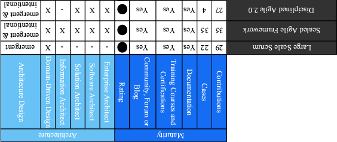
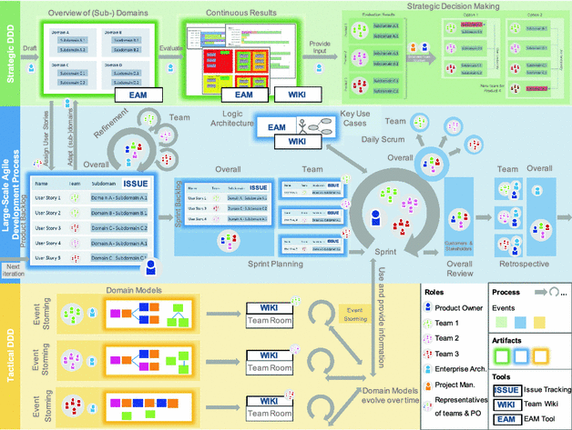
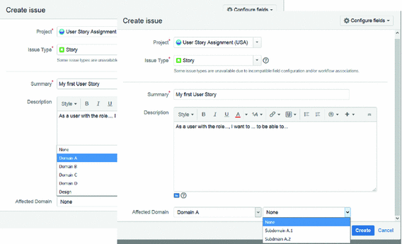
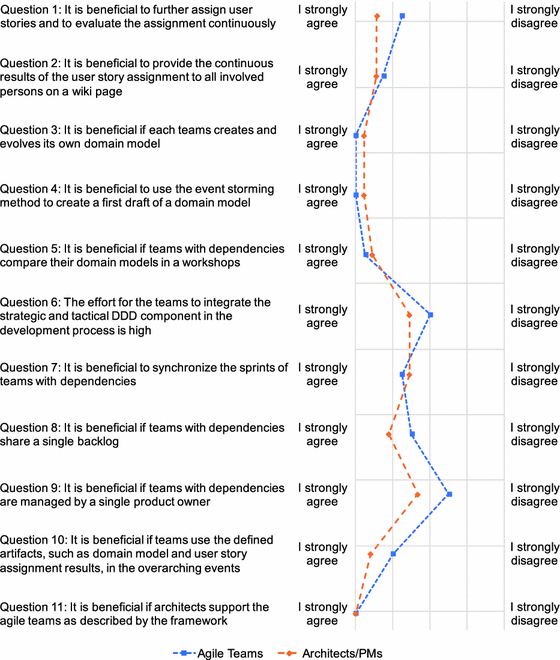

1 Introduction
Over the past two decades, agile methods have transformed and brought unprecedented changes to software development practice by strongly emphasizing change tolerance, continuous delivery, and customer involvement [1]. The success of agile methods for small, co-located teams has inspired enterprises to increasingly apply agile practices to large-scale endeavors [2]. One major critique of agile development and in particular of large-scale agile development is the lack of assistance for building and managing architecture in such development endeavors [2, 3]. On the one hand, agile teams naïvely hope that a suitable architecture will gradually emerge out of weekly refactorings [4]. However, the practice of this design is effective at team level, but insufficient when developing complex systems. It requires excessive redesign efforts, architectural divergence, and functional redundancy increasing the complexity of the system’s architecture [5, 6]. On the other hand, large “big design upfront” efforts delay the starting point of implementation [7]. The planned architecture might not be contemporary after it meets the “real world” [5].
Large-Scale Scrum (LeSS), Scaled Agile Framework (SAFe), and Disciplined Agile Framework 2.0 (DA 2.0) [8], suggest to apply Domain-driven Design (DDD) to architect in an agile way. However, so far, no real-world example exists which describes how to combine and implement scaling agile frameworks with DDD. The main objective of this paper is to explore how DDD can be utilized in order to support large-scale agile development. Based on this objective our three research questions are:
- Research Question 1: Which scaling agile frameworks reference DDD?
- Research Question 2: How can DDD be adopted in a large organization with several agile development teams?
- Research Question 3: Which roles, processes, artifacts, and tools are required to support a large-scale agile development endeavor with DDD?
The remainder of this paper is structured as follows. In Sect. 2, we motivate the need of architecting in large-scale agile development and provide an overview of related works. In Sect. 3, we present the research approach of this paper. Section 4 describes the case study on the adoption of DDD in the insurance company. Section 5 presents the evaluation results of the proposed framework. We discuss the main findings in Sect. 6 before concluding the paper with a summary of our results and remarks on future research in Sect. 7.
2 Background and Related Work
Agile methods such as Scrum, Extreme Programming (XP), and Crystal Clear, which more or less adhere to the values of the Agile Manifesto1 [9], share common characteristics, such as iterative and incremental development life cycles, focusing on small releases, collocated teams, and a planning strategy based on a release plan or feature backlog [10] where architectural design issues are not very important [11]. For instance, the incremental design practice of XP claims that architecture can emerge in daily design (emergent design) [12], which implies that architecture emerges from the system rather being imposed by some direct structuring force [11]. Apart from verbal discussions related to design decisions and overall architecture, also Scrum does not place any emphasis on architecture related practices. In Scrum, the architecture of one-project application can always be re-factored and repackaged for a higher level of reuse [11]. While “refactoring, for its part, has emerged as an important software engineering technique, it is not a replacement for sound upfront design; if an architecture is decent you can improve it, but re-factored junk is still junk” [13].
However, the role of architecture in agile endeavors has changed and it is now gaining more attraction by agilists [14]. This phenomenon is also reinforced by the increasing number of “agility and architecture can coexist” advocates cf. [3, 4], or [15]. For building complex and large-scale systems, some amount of architectural planning and governance becomes even more important [16]. Nord et al. [4] argue that for large-scale software development endeavors, agility is enabled by architecture, and vice versa. They highlight some benefits of architecture in large-scale agile efforts such as providing a common vocabulary and culture, a systematic way to control dependencies, a way to keep technical debts in check, and a guide for release planning and configuration management [4].
Some architectural tactics or models to support rapid and agile stability in large-scale agile endeavors have been proposed by academics such as aligning feature-based development and system decomposition, creating an architectural runway, using matrix teams, or the zipper model [15–17]. Also, practitioners are grappling with the issue of marrying agile approaches with architectural practices for building complex systems such as Cockburn and his walking skeleton [18], Leffingwell and his colleagues’ SAFe [19], or Ambler and his colleagues’ DA 2.0 [20]. Recognizing the importance of architecting in large-scale agile endeavors, we have investigated the role of architects based on a structured literature review with an excerpt in Table 1 [8].
Table 1.
Excerpt of scaling agile frameworks maturity and architecture [8].

Given that architecting should be an iterative activity, we found that mature scaling agile frameworks [8] suggest DDD as a light-weight approach for large-scale agile efforts. DDD facilitates an iterative process of collaboration to explore a model and develop a ubiquitous language between agile teams and domain experts. Although, DDD has been proposed by these frameworks, to the best of our knowledge, there is no other work that describes the adoption of DDD in real large-scale agile development program.
3 Case Study Design
A case study is a suitable research methodology for software engineering research since it studies contemporary phenomena in its natural context [21]. It is a valuable research method in situations where a researcher aims to understand phenomena in a complex, real life context [22, 23]. We followed the guidelines described by Runeson and Höst [21] for the research process.
Case study design: Main objective of this paper is to explore how DDD can be utilized in order to support large-scale agile development. Based on this objective, we defined three research questions (see Sect. 1). Our study is a single-case study and the case was purposefully selected, because the studied company had been experimenting with agile approaches for the last two years and is now transitioning from planned-driven methodology to large-scale agile development. Our case is exploratory as we are looking into an unexplored phenomenon [21]. Our unit of analysis is the large-scale agile development endeavor at the large insurance company.
Preparation for data collection: We used a “mixed methods” approach with three levels of data collection techniques according to [24]:Analysis of collected data: The quantitative data of the user story assignment was analyzed by using descriptive statistics. The Likert-scale data of the structured interviews were coded, which then were used to calculate the mean for each question per stakeholder group. Workshop protocols and wikis were analyzed and information was clustered utilizing open coding [27]. After the initial coding, we looked at groups of code phrases and merged them into concepts. Subsequently, we related the concepts to our formulated research questions. Finally, the main findings were incorporated in a framework.
- 1.As direct methods, we made observations with high degree of interactions [21] in several event storming workshops [25] and conducted structured interviews. The workshops helped us to develop a deep understanding of the overall structure of the development endeavor with its roles, process, artifacts, and tools. We interviewed nine stakeholders involved in the development effort with different roles in order to enable the triangulation of data sources [26]. The structured interviews helped us to evaluate our framework and incorporate feedback into the final version of it.
- 2.In the issue tracking tool Jira2, agile teams assigned user stories to domains and subdomains. This user story assignment provided us quantitative data for determining in which subdomains the different teams on the program are working on.
- 3.The collaboration tool Confluence3 provided us wikis with detailed information on logical architecture models and documentations. We used it as a complementary source of information.
4 Applying Domain-Driven Design in Large-Scale Agile Development
4.1 Case Description
This paper comprises the result of a case study conducted 2017 in a large insurance company. The involved interview partners form a unit with three agile teams with two to eight developers developing with other teams an integrated sales platform for several distribution channels. The agile teams are cross-functional including employees from the IT department as well as from business domains and coexist next to many other teams that use waterfall methodologies for software development. This agile unit primarily focuses on the development of its particular product, without being distracted by other external tasks. For that reason, they are co-located at another location of the company. As agile methodologies were not commonly used in the company before, the agile teams received training concerning agile methodologies before the program begins and during the development process. The agile based product development has started two years ago and is not finished yet.
It is required that all teams adopt the same lean and agile based methodology which is basically LeSS extended by some XP practices. This methodology tailored for the insurance company was created with assistance of the company Pivotal that provided know-how on lean startup and agile principles [28]. The most essential feature added to the Scrum methodology is the development and release of Minimum Viable Products (MVP). Prototypes are used to validate proof of concepts. An MVP already represents a finished product that includes only minimal features. An MVP is released very early in the development process in order to incorporate and adapt customer feedback [29]. After having released a first MVP after 100 days, the team extends the MVP gradually with further functions.
4.2 Framework
In the following, we will describe the large-scale agile development endeavor of the insurance organization along the tiers, roles, processes, artifacts, and tools of our proposed framework (see Fig. 1).
Strategic Domain-driven Design: Determines in which subdomains the different teams work. This is achieved by assigning all user stories of all teams to the subdomain they belong to. An overview of all domains and their subdomains was created by an enterprise architect (EA) before applying the defined framework. However, the overview of the domains can be adapted in the course of the process, e.g., in case completely new features are implemented. The assignment is conducted by the teams themselves and is continuously evaluated through an enterprise architecture management (EAM). The results support decisions of program managers (PM) and product owners (PO), e.g., to determine whether the teams have overlapping requirements. Ideally, there is little overlap between the domains and subdomains to reduce dependencies across the teams.
Large-scale agile development process: It is the central part of the framework, which is the main process of all teams. It is enriched by DDD practices. During the development process, all teams provide input to the DDD processes. Based on their inputs teams can also profit from the results of the incorporated DDD approaches. The development process in the framework incorporates many elements as defined by LeSS. LeSS is considered to fit best in those challenges where the number of teams is still manageable, but likely to increase in the near future. LeSS incorporates agile modeling approaches which can be easily connected to DDD. Additionally, LeSS suggests to have a single PO and a single product backlog for all teams. This is crucial for product quality and dealing with overarching functions.
Tactical Domain-driven Design: It describes how agile teams can use the DDD approach to contribute to their own development process. The central element of tactical DDD is the domain model which serves as ubiquitous language in each team individually. All input for the domain model comes from the respective team, while the EA mainly provide methodological guidance, e.g., as facilitator. The domain models are continuously improved throughout within entire development process. For evolving the domain model, agile modeling techniques, such as event storming workshops, are used. Each agile team defines, uses, and evolves its own domain model.
Roles: Our framework proposes program managers (PM) and enterprise architects (EA) in addition to developers, a scrum master (SM), and a single PO. The developers are organized in three agile teams. The teams are self-managing, co-located and long-lived. The teams clarify, implement, and test user stories. The role of the SM is not depicted explicitly in our framework, as the SM role correspondents to the SM role in Scrum. Each team has an own SM who has no specified inter-team responsibilities. Within our framework, one PO is responsible for all agile teams. The PO manages the single product backlog. This especially includes prioritization of user stories and assignment of them in cooperation with representatives from all teams to the most suitable team. The PO acts as a connector between teams, customers, and higher-level management being in continuous exchange with the PMs. The PO communicates with all teams continuously and is aware of team dependencies. The PO advises the PM concerning organizational structures and suggests to reorganize teams. The PM mostly use the input from strategic DDD for strategic decisions, e.g., determining the organizational structure and deciding if additional teams are necessary for the overall program. PM only take part in strategic DDD and participate in higher level workshops in order to detect overarching functions which are to be implemented within the program. The EA provides methodological guidance to teams. On a strategic level, the EA gives an overview of domains and subdomains to the team. This includes a first draft of the overview as well as coaching the team on how to use this artifact. The EA evolves the domain overview considering the input from the teams and is responsible that the overview is adapted accordingly in all tools. The EA supports teams with the continuous user story assignment and presents its results comprehensively to the PO and PMs.

Fig. 1.
Overall framework for supporting large-scale agile development with Domain-driven Design.
The EA has no decision-making authority, but provides input to decisions. On a tactical level, the EA introduces the method of event storming as well as domain modeling to the teams. The EA is the moderator in all event storming workshops and teaches the teams how the event storming approach works and how they can incorporate the domain model in their development process in a way that provides value to the teams in terms of reaching a common understanding and defining an own ubiquitous language. The EA optionally participates in team backlog refinements or team retrospectives to help with keeping the domain model up-to-date. Also, the EA supports teams with their continuous domain modeling.
Events: They consist of four types: traditional Scrum events, large-scale agile events, DDD events, and the Sprint itself. The traditional Scrum events comprises the intra-team events, namely sprint planning, backlog refinement, daily Scrum, and retrospective. The large-scale agile events consist of overall sprint planning, backlog refinement, daily scrum, retrospective, and review events. The PO and representatives from all teams participate in all inter-team events. This allows the PO in the framework to communicate with all teams continuously and in parallel. These meetings especially allow discussions about dependencies and responsibilities of the teams. The DDD events include the continuous user story assignment and evaluation, and strategic decision making on the strategic DDD level. The event storming workshops takes place on the tactical DDD level. The continuous user story assignment and evaluation serves to determine a suitable organizational structure in line with the DDD approach. The goal is to have teams that are working in one bounded context within one subdomain. The strategic decision making in the framework is done by the PO and PMs. Here, they are mostly concerned about the organizational structure of the teams. This comprises not only potentially restructuring of existing teams, but also deciding about the responsibilities as soon a new team is added. The event storming workshop supports exploration of complex business domains with domain models starting with domain events as their most crucial part. It allows to come up with a comprehensive model of the business flow in a domain by bringing domain experts and developers together in a room to build a model collaboratively. The approach is in line with DDD, as it helps to determine bounded contexts and aggregates quickly. It has a very easy and intuitive notation that all participants can understand. The event storming workshops create an atmosphere for discussions about the business logic. In the case study, event storming is regarded as a first step towards defining a domain model with the central concept of events.
LeSS suggests to synchronize the sprints for all teams. This means the same sprint length as well as sprint start and end. Here a sprint length of one to two weeks is suggested.
Artifacts: Essential to the framework are different artifacts which are used and created in the process. While on the strategic DDD level, the overview of the subdomain as well as the results of the user story assignment are essential, on the tactical DDD level the domain models are the central artifacts. User stories, product and sprint backlog are very essential in the strategic DDD as well as in the development process. It makes sense for the teams to define key use cases and to document the logic architecture. The logic architecture models provides a rough sketch of the entire system. Key use cases can be used to understand what a typical user expects from a system, how a user interacts with the systems and benefits from it.
Tools: The agile teams use Jira to manage the product backlog. In order to document which domain and subdomains are affected by a user story, a new field called “Affected Domain” has been added to Jira (see Fig. 2).

Fig. 2.
Example of assigning domains and subdomains to user stories.
Further application of the framework requires a team collaboration software and a wiki. In the case study, the agile teams utilize Confluence as a knowledge base for collaboration and documentations. All teams have established a wiki for their documentations. Each team has its own wiki space. An overarching wiki space is also present. The overarching space includes among others documentation on strategic and tactical DDD as well as documentation of the overview of domains and subdomains. Most importantly, on one page the event storming method is explained and a picture of the current domain for the corresponding team is included. All former versions of the domain model are included to document its development over time. Additionally, an Enterprise Architecture Management (EAM) tool is necessary to be able to automate the evaluation of the user story assignment. The EA uses the EAM tool Iteraplan. It facilitates the automation of the evaluation of the user story assignment. The user stories with assigned domains and subdomains can be imported from Jira in order to build figures, e.g., nesting cluster graphics, which visualize subdomains and teams working on them with (sub-)domains colored depending on their total number of user stories. PM can use Iteraplan’s figures for strategic decision making.
5 Evaluation
In order to evaluate the defined framework, we conducted interviews with nine persons in the insurance company of which four are part of an agile team. The other interview partners work in roles that frequently interact with agile teams. The interviewees were two PM (PM1, PM2), one scrum master (SM), two business analysts (BA1, BA2), one PO, one department head of sales processes and applications (DH), one lead EA, and one domain architect (DA). Interview partners were not only asked if they agree or disagree to a statement, but also for the reasons for their choice. Figure 3 shows the statements and the respective degree of agreement by the interviewees.
Strategic Domain-driven Design: The evaluation of the Strategic DDD component includes the user story assignment and interview results. In total, 425 stories were assigned by three teams. User stories purely concerned with UI design and technical issues - around 35% - have not been assigned as they do not belong to any business subdomain. Nearly 58% were assigned unambiguously to a business subdomain. Only 3% of user stories were either very difficult to assign meaning that no suitable subdomain was defined yet. 4% of the user stories were assigned to more than one subdomain which is caused by a very broad scope of user stories. This can be prevented by dividing the respective stories focusing on functional requirements of only one subdomain. According to the interview results, the agile teams themselves have not profited extensively from the user story assignment so far. However, the architects, PMs, and PO evaluated the assignment of user stories as more beneficial. The PO considered that the result of the user story assignment proved correct about the overarching subdomains his team works in. DH, PM1 and PM2 confirmed that the results show the core focus of each team as well as overarching functions that need to be discussed with different teams. Further, they state that results can be a valid basis to restructure teams and their responsibilities. The SM stated that making benefits of such a method clearer to agile team members help them to profit from the user story assignment in the future. This could include providing the results continuously on a wiki page accessible by all involved persons.

Fig. 3.
Evaluation results of the proposed framework.
Tactical Domain-driven Design: Evolving own domains models for each team starting with event storming workshops reveals a very high agreement among all interview partners. The model helps the teams to reach a common understanding of the business logic in its domain and serves as a shared language for all team members - developers and business experts (DA, PO, EA). SM regarded domain models as very helpful to detect which functionality could be added next and as a tool to discuss how the logic changes. DA mentioned that in the future this domain model has to be found in the code as a representation of the business logic. However, PM1 mentioned that this might make more sense in the future when the teams are structured based on subdomains. In general, the team members who participated in the event storming workshops were convinced that the method is helpful. Advantages of the method are that it is very simple (PO, AM), that it creates a good atmosphere for open discussions (BA2, EA), that its focus is on business events and logic (BA2) and helps to find aggregates and (sub-)domain boundaries (PM1). According to DA, focusing on business logic before addressing technical issues is helpful. Comparing domain models between teams is considered beneficial to determine boundaries of each teams work (BA2), to reach a common understanding of the business logic and where interfaces between the applications are required as well as to define a published language (DH). However, this approach can increase the need for cross-team coordination and communication (EA, BA1). Further, this might not be desired by the teams as they are supposed to reach their own goals and therefore their interests in common goals and overall architecture might not be given (AM). According to DA, the EA’s responsibility is to compare domain models and to detect challenges that might occur. An EA could contact the affected teams and bring them together to discuss and decide on the detected issues. These results were also observed in the event storming workshops.
Large-Scale Agile Development Process: The effort for the integration of the strategic and tactical DDD components was assessed neither as low nor high. Team members who participated in the assignment and the workshops assessed efforts higher. As this component of the framework has not been operationalized yet, further questions concerned the development process in general. The opinions differ if synchronizing sprints, sharing a single backlog and a single PO is beneficial. Some interviewees argued that actually no dependencies should exist and continuous delivery and integration would make such means unnecessary (PM2, BA2, DA). However, other interviewees stated that with similar complexity, using components of scaling agile frameworks could enhance transparency and focus on common goals (EA, PM1). A single PO supports overarching prioritization of user stories (AM, EA), but if the agile teams are inexperienced it might be too much work for one person (PO, DH, PM2).
Concluding, the use of the defined artifacts, such as domain models and user story assignment results, was considered as helpful and especially support of agile teams by architects has been seen as very beneficial by all interview partners. According to DH, architects play a central role for making overarching strategic considerations, e.g., concerning team structure (PO, BA1, BA2). Others considered architects also as coaches for new methodologies, such as DDD and event storming (PM1, AM, BA2).
6 Discussion
Key findings: After working independently from all architectural governance, the agile teams and PM conceived that without any form of architectural guidance large agile programs can hardly be successful. Therefore, one of the key findings is that agile teams, as soon as there are several of them on a program, need to be supported by EA having an overview of the teams and the applications they develop. Many challenges arise which cannot be addressed by single teams, but need to be addressed with overarching methods driven by overarching roles within the organization. Especially, combining large-scale agile practices and DDD can address various challenges. While scaling agile frameworks support cross-team coordination and communication, they lack detailed advice on how to do architecting in large scale agile programs. DDD provides basic concepts for the architecture that can be beneficial not only to the agile teams, but the program overall. Architectural activities in agile programs earlier were not accepted by agile teams who wanted to work independently. However, if architects are capable of providing apparent value to the agile teams, they appreciate architectural support. The same applies for PM and other decision makers. To be able to demonstrate value quickly to both decision makers and agile teams, we recommend starting with both strategic and tactical DDD at the same time. Decision makers will profit soon from the strategic DDD, while agile teams profit mostly from the tactical component. The framework shows how to combine large-scale agile development and DDD in a light-weight manner.
Threats to validity: We discuss potential threats to validity using Runeson and Höst’s [21] criteria for assessing the validity of case studies. The first criterion is construct validity. It reflects to what extent the operational measures that are studied really represent what the researcher has in mind, and what is investigated according to the research questions. To address this aspect, we interviewed multiple persons with different roles and attended various event storming workshops. The interviews and workshop protocols were coded and analyzed. We also applied a “mixed methods” approach as we gathered data through direct observations, structured interviews, and various software tools. Another potential concern is that of internal validity, which is not relevant, as this research was neither explanatory nor causal [21]. A third criterion is external validity, i.e. to what extent it is possible to generalize the findings. We focus on analytical generalization [21] by providing a thorough description of the case. Particularly, our case study provides empirical insights that allow for a profound understanding of this insurance organization’s large-scale agile development endeavor. The presented findings should be viewed as valuable insights for other organizations interested in supporting large-scale agile development efforts with DDD. Runeson and Höst’s [21] last criterion is reliability. It is concerned with to what extent the data and the analysis are dependent on the specific researcher. To mitigate this threat, the study has been designed so that data was collected from different sources.
7 Conclusion and Future Work
The success of agile methods for small, co-located teams has inspired organizations to increasingly apply agile practices to large-scale endeavors [2]. However, large organizations face challenges when scaling agility such as inter-team coordination, dependencies on other programs, and lack of clearly defined requirements [30]. Especially, a lacking definition of architecture causes problems when adopting agile methods. Agile methods do not provide guidance on architecture, but assume that it emerges with each iteration and continuous re-factoring. This can be problematic as soon as complex systems are built by many teams. Some governance and architectural planning is required to define work coordination and to develop reliable and scalable systems [2, 16]. DDD encourages an iterative and collaborative process for evolving architecture in an agile way.
Our case study provides a detailed description of how DDD can support large-scale agile development. The findings indicate that it is easier to gain traction of decision makers and agile teams at first by demonstrating the value of DDD. Our findings show that agile teams need some form of architectural guidance and support by EA having a holistic overview of the teams and the applications they develop. Stakeholders involved in the large-scale agile program appreciate that architects not only coach the teams concerning new methods, but also support them in application and exploitation. Our proposed approach fostered the acceptance of architectural thinking of agile teams. It helped them to realize the benefits of architecting, thus, encouraging their intrinsic motivation. Our study contributes to the growing knowledge base on supporting large-scale agile software development with EA.
We will continue to study the case organization as the large-scale agile development effort becomes more mature and the presented framework will be further operationalized. In addition, we plan to study the collaboration between EA and agile teams in other large organizations that are pursuing large-scale agile development endeavors. Also, we are interested in identifying recurring stakeholder concerns and beneficial practices.

Open Access This chapter is licensed under the terms of the Creative Commons Attribution 4.0 International License (http://creativecommons.org/licenses/by/4.0/), which permits use, sharing, adaptation, distribution and reproduction in any medium or format, as long as you give appropriate credit to the original author(s) and the source, provide a link to the Creative Commons license and indicate if changes were made.
The images or other third party material in this book are included in the book's Creative Commons license, unless indicated otherwise in a credit line to the material. If material is not included in the book's Creative Commons license and your intended use is not permitted by statutory regulation or exceeds the permitted use, you will need to obtain permission directly from the copyright holder.
References
1.
Dingsøyr, T., Nerur, S., Balijepally, V., Moe, N.B.: A decade of agile methodologies: towards explaining agile software development (2012)Crossref
2.
Dingsøyr, T., Moe, N.B.: Towards principles of large-scale agile development. In: Dingsøyr, T., Moe, N.B., Tonelli, R., Counsell, S., Gencel, C., Petersen, K. (eds.) XP 2014. LNBIP, vol. 199, pp. 1–8. Springer, Cham (2014). https://doi.org/10.1007/978-3-319-14358-3_1Crossref
3.
Rost, D., Weitzel, B., Naab, M., Lenhart, T., Schmitt, H.: Distilling best practices for agile development from architecture methodology. In: Weyns, D., Mirandola, R., Crnkovic, I. (eds.) ECSA 2015. LNCS, vol. 9278, pp. 259–267. Springer, Cham (2015). https://doi.org/10.1007/978-3-319-23727-5_21Crossref
4.
Nord, R.L., Ozkaya, I., Kruchten, P.: Agile in distress: architecture to the rescue. In: Dingsøyr, T., Moe, N.B., Tonelli, R., Counsell, S., Gencel, C., Petersen, K. (eds.) XP 2014. LNBIP, vol. 199, pp. 43–57. Springer, Cham (2014). https://doi.org/10.1007/978-3-319-14358-3_5Crossref
5.
Agile architecture. http://www.scaledagileframework.com/agile-architecture/. Accessed 22 Nov 2017
6.
Mocker, M.: What is complex about 273 applications? untangling application architecture complexity in a case of European investment banking. In: 2009 42nd Hawaii International Conference on System Sciences HICSS 2009, pp. 1–14. IEEE (2009)
7.
Nord, R.L., Ozkaya, I., Sangwan, R.S.: Making architecture visible to improve flow management in lean software development. IEEE Softw. 29(5), 33–39 (2012)Crossref
8.
Uludağ, Ö., Kleehaus, M., Xu, X., Matthes, F.: Investigating the role of architects in scaling agile frameworks. In: 2017 IEEE 21st International Enterprise Distributed Object Computing Conference (EDOC), pp. 123–132. IEEE (2017)
9.
Abrahamsson, P., Babar, M.A., Kruchten, P.: Agility and architecture: can they coexist? IEEE Softw. 27(2), 16–22 (2010)Crossref
10.
Augustine, S.: Managing Agile Projects. Prentice Hall PTR, Upper Saddle River (2005)
11.
Babar, M.A.: An exploratory study of architectural practices and challenges in using agile software development approaches. In: 2009 Joint Working IEEE/IFIP Conference on Software Architecture & European Conference on Software Architecture WICSA/ECSA 2009, pp. 81–90. IEEE (2009)
12.
Beck, K.: Extreme Programming Explained: Embrace Change. Addison-Wesley Professional, Boston (2000)
13.
Meyer, B.: Agile!: The Good, the Hype and the Ugly. Springer, Switzerland (2014). https://doi.org/10.1007/978-3-319-05155-0Crossref
14.
Freudenberg, S., Sharp, H.: The top 10 burning research questions from practitioners. IEEE Softw. 27(5), 8–9 (2010)Crossref
15.
Bellomo, S., Kruchten, P., Nord, R.L., Ozkaya, I.: How to agilely architect an agile architecture. Cutter IT J. 27(2), 12–17 (2014)
16.
Leffingwell, D., Martens, R., Zamora, M.: Principles of agile architecture. LLC. and Rally Software Development Corp., Leffingwell (2008)
17.
Buchmann, F., Nord, R.L., Ozakaya, I.: Architectural tactics to support rapid and agile stability. Carnegie-Mellon Univ Pittsburgh PA Software Engineering Inst., Technical Report (2012)
18.
Cockburn, A.: Crystal Clear: A Human-powered Methodology for Small Teams. Pearson Education, Upper Saddle River (2004)
19.
Scaled agile framework. http://www.scaledagileframework.com/. Accessed 05 Dec 2017
20.
The disciplined agile (DA) framework. http://www.disciplinedagiledelivery.com/. Accessed 05 Dec 2017
21.
Runeson, P., Höst, M.: Guidelines for conducting and reporting case study research in software engineering. Empir. Softw. Eng. 14(2), 131 (2008). https://doi.org/10.1007/s10664-008-9102-8Crossref
22.
Benbasat, I., Goldstein, D.K., Mead, M.: The case research strategy in studies of information systems. MIS Q. 11(3), 369–386 (1987)Crossref
23.
Yin, R.K.: Case Study Research: Design and Methods. Sage Publications, Thousand Oaks (2013)
24.
Lethbridge, T.C., Sim, S.E., Singer, J.: Studying software engineers: data collection techniques for software field studies. Empir. Softw. Eng. 10(3), 311–341 (2005)Crossref
25.
Brandolini, A.: Introducing EventStorming: An act of Deliberate Collective Learning. Leanpub (2017)
26.
Stake, R.E.: The Art of Case Study Research. Sage, Thousand Oaks (1995)
27.
Miles, M.B., Huberman, A.M., Saldana, J.: Qualitative Data Analysis: A Methods Sourcebook. Sage Publications Ltd., Thousand Oaks (2014)
28.
Pivotal Software: Pivotal labs (2017). https://pivotal.io/labs
29.
Moogk, D.R.: Minimum viable product and the importance of experimentation in technology startups (2012). http://timreview.ca/article/535
30.
Paasivaara, M., Lassenius, C.: Scaling scrum in a large globally distributed organization: a case study. In: 2016 IEEE 11th International Conference on Global Software Engineering (ICGSE), pp. 74–83, August 2016
Footnotes